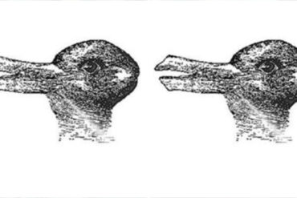

Is That A Duck Or A Rabbit? How Your Answer Reveals Something About Your Brain
Quizzes·1 min read"
American psychologist Joseph Jastrow used the now-famous duck or rabbit drawing to make a point about perception in 1899. According to him, perception isn’t just about what you see but also what you think. More than 100 years later, we know what you see in this photo can tell you a lot about your creative side.
Is That A Duck Or A Rabbit?
Which do you see first in this picture: a duck or a rabbit? You can tell how creative you are by what you see, how fast you see it, and how fast you can see the opposite. Jastrow’s studies focused on how fast you could see the second animal and how fast people could change their perception. According to his research, the time of year also affects what people see first. During Easter, for example, people tend to notice the rabbit first. The duck is spotted first in October.
More Studies Done
The Beckman Institute’s Kyle Mathewson did his own duck or rabbit experiment too. He asked participants what animal they saw first. After that, he asked them to imagine a duck eating a rabbit. When they saw the other animal, they couldn’t see it anymore. Actually, they were shocked they didn’t see it at all.
“We’re allowing people to use higher-level processes in a better way, in a new way. So it’s not that their eyes aren’t letting them see, or that your visual system doesn’t let you see a duck beside a rabbit, but that everything you thought about ducks and rabbits before didn’t let you see the duck and the rabbit. So we’re giving you a new lens to look at the figures.” says Mathewson.
During sex, there are different types of kissing.
What It Has To Do With Creativity
In most studies, people who see both the duck and the rabbit without a prompt are more creative than those who can’t. What do you say? Did you see both animals quickly? Do you consider yourself creative regardless of what you saw?